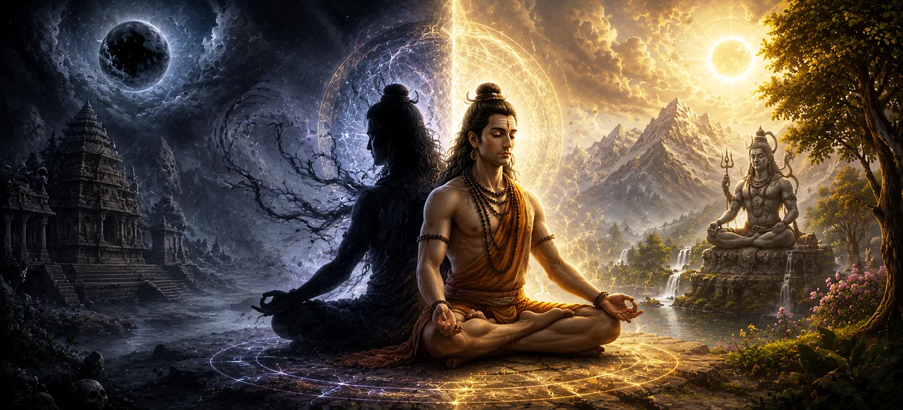

छायापुरुष का रहस्य
उमा संहिता के अध्याय 27, अध्याय 28 में जांच की गई आध्यात्मिक मुक्ति की सर्वोच्च अवस्था से आगे बढ़ते हुए आकर्षक और गूढ़ विज्ञान पर प्रकाश डाला गया है। छायापुरुष का रहस्य (छाया स्वयं)। शिव में मृत्यु दर के विघटन की खोज करने के बाद, यह शास्त्र मानव छाया के भीतर दिखाई देने वाले सूक्ष्म शारीरिक और नैदानिक प्रतिबिंबों पर ध्यान केंद्रित करता है, जो जीवन शक्ति, स्वास्थ्य और भविष्य की नियति में गहन अंतर्दृष्टि प्रदान करता है।
यह अध्याय दीर्घायु का पूर्वानुमान लगाने, छिपे हुए असंतुलन का पता लगाने और भौतिक अस्तित्व को नियंत्रित करने वाले सूक्ष्म ऊर्जावान ब्लूप्रिंट को समझने के लिए किसी की प्रक्षेपित छाया को देखने के योग अभ्यास का विवरण देता है।
इस पाठ में मुख्य विषय (11 स्तंभ)
- 01 छायापुरुष की परिभाषा एवं प्रकृति →
- 02 भौतिक शरीर और छाया के बीच आध्यात्मिक संबंध →
- 03 अवलोकन के लिए उचित पर्यावरण और योगिक स्थितियाँ →
- 04 दीर्घायु का पूर्वानुमान लगाना और शारीरिक जीवन शक्ति का आकलन करना →
- 05 छाया विकृतियों के माध्यम से आसन्न मृत्यु का पता लगाना →
- 06 छाया में लुप्त अंगों और मलिनकिरण का महत्व →
- 07 प्राणिक शरीर का सूक्ष्म ऊर्जावान मानचित्रण →
- 08 केंद्रित जागरूकता और प्रत्याहार की भूमिका →
- 09 चिंतन के माध्यम से भविष्य की नियति और कार्मिक प्रवृत्तियों को पढ़ना →
- 10 कष्टों पर विजय पाने के लिए उपचारात्मक अनुष्ठान और शिव पूजा →
- 11 छायापुरुष से आदिम सृष्टि की ओर परिवर्तन →
1. छायापुरुष की परिभाषा एवं प्रकृति
यह प्रारंभिक खंड छायापुरुष को भौतिक रूप से प्रक्षेपित होने वाली चमकदार छाया के रूप में प्रस्तुत करता है, जो आंतरिक आत्मा और सूक्ष्म शरीर रचना के एक ऊर्जावान दर्पण के रूप में कार्य करता है।
उमा संहिता बताती है कि यह छाया केवल प्रकाश की अनुपस्थिति नहीं है, बल्कि प्राण का जीवंत प्रतिबिंब है।
2. भौतिक शरीर और छाया के बीच आध्यात्मिक संबंध
पाठ स्थापित करता है कि भौतिक शरीर के सूक्ष्म चैनलों के भीतर कोई भी परिवर्तन, गिरावट, या ऊर्जावान अवरोध तुरंत प्रतिबिंबित छाया में सूक्ष्म विकृति के रूप में प्रकट होता है।
छाया आंतरिक स्वास्थ्य के लिए तत्काल निदान स्क्रीन के रूप में कार्य करती है।
3. अवलोकन के लिए उचित पर्यावरणीय और योगिक स्थितियाँ
उमा संहिता एक अभ्यासकर्ता के लिए भ्रम या त्रुटि के बिना अपने छायापुरुष का सफलतापूर्वक निरीक्षण और व्याख्या करने के लिए आवश्यक विशिष्ट समय, प्रकाश व्यवस्था और ध्यान केंद्रित करने की रूपरेखा बताती है।
इस अभ्यास के लिए शांति और स्थिर सांस आवश्यक शर्तें हैं।
4. दीर्घायु का पूर्वानुमान लगाना और शारीरिक जीवन शक्ति का आकलन करना
जब छाया पूर्ण, स्थिर और उज्ज्वल दिखाई देती है, तो यह अभ्यासकर्ता के लिए मजबूत स्वास्थ्य, संतुलित दोष और शेष जीवन की लंबी अवधि का प्रतीक है।
प्रतिबिंब की स्पष्टता के माध्यम से जीवन शक्ति सीधे प्रतिबिंबित होती है।
5. छाया विकृतियों के माध्यम से आसन्न मृत्यु का पता लगाना
शास्त्र से पता चलता है कि यदि किसी व्यक्ति की छाया निर्धारित शर्तों के तहत खंडित, सिर रहित या धुंधली दिखाई देती है, तो यह तेजी से गिरावट या असामयिक मृत्यु के करीब आने का संकेत देता है।
यह पूर्वचेतावनी साधक को आध्यात्मिक अभ्यास तेज करने और दिव्य शरण लेने की अनुमति देती है।
6. छाया में लुप्त अंगों और मलिनकिरण का महत्व
उमा संहिता विशिष्ट संकेतों का विवरण देती है: यदि छाया के विशेष अंग अनुपस्थित या विकृत लगते हैं, तो यह भौतिक शरीर के उन संबंधित भागों में आने वाली बीमारी या चोट का संकेत देता है।
ये विस्तृत संकेत दैहिक प्रारंभिक चेतावनी की एक प्राचीन प्रणाली के रूप में काम करते हैं।
7. प्राणिक शरीर का सूक्ष्म ऊर्जावान मानचित्रण
पाठ छाया अवलोकन को सूक्ष्म नाड़ियों और चक्रों के गहन मानचित्रण के साथ जोड़ता है, जिसमें दिखाया गया है कि आंतरिक ऊर्जा धाराएं दृश्य आभा और छाया बनाने के लिए बाहर की ओर कैसे प्रक्षेपित होती हैं।
बाहरी छाया आंतरिक ऊर्जावान संरेखण को दर्शाती है।
8. केंद्रित जागरूकता और प्रत्याहार की भूमिका
उमा संहिता इस बात पर जोर देती है कि छायापुरुष विज्ञान में महारत हासिल करने के लिए गहरी इंद्रिय प्रत्याहार (प्रत्याहार) और अटूट एकाग्रता की आवश्यकता होती है, जिसके बिना सूक्ष्म घटनाओं को नहीं समझा जा सकता है।
मन का भटकाव छाया की सूक्ष्म दृश्य प्रतिक्रिया को अस्पष्ट कर देता है।
9. चिंतन के माध्यम से भविष्य की नियति और कर्म प्रवृत्तियों को पढ़ना
शारीरिक स्वास्थ्य से परे, उन्नत चिकित्सक अपनी जीवन यात्रा में प्रकट होने वाले कार्मिक रुझानों, आने वाली बाधाओं और आध्यात्मिक मील के पत्थर को समझने के लिए छाया प्रतिबिंब का उपयोग करते हैं।
छाया वर्तमान कर्म द्वारा आकारित भविष्य की संभावनाओं के दर्पण के रूप में कार्य करती है।
10. कष्टों पर काबू पाने के लिए उपचारात्मक अनुष्ठान और शिव पूजा
उमा संहिता भगवान शिव की विशिष्ट पूजा, रुद्र जप और दान कार्यों को शक्तिशाली उपचार के रूप में बताती है जब छाया अवलोकन से संकट या आसन्न आपदा के अशुभ संकेत प्रकट होते हैं।
ईश्वरीय कृपा में भाग्य को बदलने और ऊर्जावान अखंडता को बहाल करने की शक्ति है।
11. छायापुरुष से आदिम सृष्टि की ओर परिवर्तन
छायापुरुष और सूक्ष्म शरीर निदान के जटिल रहस्य का खुलासा करने के बाद, उमा संहिता अगले अध्याय में कथा को सबसे भव्य पैमाने - आदिकालीन रचना - तक बढ़ाने की तैयारी करती है।
यह परिवर्तन व्यक्तिगत दैहिक प्रतिबिंब से सर्वोच्च दिव्य इच्छा द्वारा ब्रह्मांड के ब्रह्मांडीय उद्भव की ओर बढ़ता है।
आध्यात्मिक अंतर्दृष्टि
अध्याय 28 हमें ग्यारह मूलभूत स्तंभों के माध्यम से सिखाता है कि छाया निर्जीव नहीं है, बल्कि हमारे प्राण और भाग्य का एक जीवित प्रतिबिंब है। केंद्रित अवलोकन और शिव की कृपा के माध्यम से, साधक स्वास्थ्य, जीवन शक्ति और आध्यात्मिक विकास को प्राप्त कर सकते हैं।
अक्सर पूछे जाने वाले प्रश्न
① उमा संहिता में अध्याय 28 का मुख्य विषय क्या है?
यह अध्याय छायापुरुष या छाया प्रतिबिंब के जटिल आध्यात्मिक विज्ञान की पड़ताल करता है, जिसका उपयोग योगिक भविष्यवाणी और जीवन शक्ति का आकलन करने के लिए किया जाता है।
② छायापुरुष भविष्य की घटनाओं या स्वास्थ्य को कैसे प्रकट करता है?
विशिष्ट ध्यान और सौर स्थितियों के तहत किसी की प्रतिबिंबित छाया में संशोधन, स्पष्टता, या लापता अंगों को देखकर, योगी दीर्घायु और आसन्न भाग्य का निदान करते हैं।
③ उमा संहिता की प्रगति में इस अध्याय के बाद क्या आता है?
छाया स्व के रहस्यों को उजागर करने के बाद, पाठ अगले अध्याय में आदिम रचना की भव्य लौकिक कथा में परिवर्तित हो जाता है।